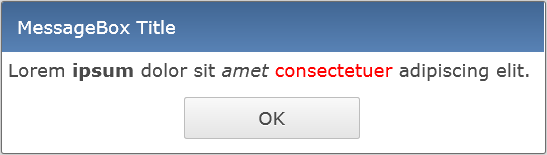

Move the following projects from the RAP E4 Incubator to the main RAP Runtime project and create a separate p2 repository that can be used for building Eclipse 4 applications based on RAP. These artifacts are kept separate from their Eclipse Platform counterparts, and are not contributed to the aggregated Simultaneous Release p2 repository.
The feature structure in the new RAP E4 p2 repository follows the traditional RAP structure.
For e4 beginners we added a "New Project Wizard" template for creating a simple RAP e4 application.
The Equinox project added the Apache Felix SCR bundle as a replacement for their old Equinox DS implementation. The RAP Equinox Target Feature has been updated to reflect this change. org.eclipse.equinox.ds has been replaced by org.apache.felix.scr, which required a change in the dependency chain from org.eclipse.equinox.util to org.eclipse.osgi.util.
The underlying platform bundle org.eclipse.equinox.common now requires Java 8. The Bundle-RequiredExecutionEnvironment (BREE) of org.eclipse.rap.jface bundle has been updated to JavaSE-1.8 too.
The themeablity of some widgets has been improved. The following properties have been added:
padding property for Label
padding property for Link
The support for simple HTML markup has been extended to the ExpandBar widget. It
can be activated in the same way like in Table and Label, using the
constant RWT.MARKUP_ENABLED. It affects the text in the ExpandItem
header.
We also added markup support to MessageBox message. Use the new public method
setMarkupEnabled to enable it.

This is one of the most requested features, which is finally implemented. Most recent browser
versions supported by RAP (except IE9) can filter the files shown in the browse dialog by their
extensions. To set them, use setFilterExtensions( String[] ) on
FileUpload/FileDialog.
It's now possible to specify the RichTextEditor language using the new generic
RichTextEditorConfiguration class.
Big thanks to Wojtek Polcwiartek for its contribution.